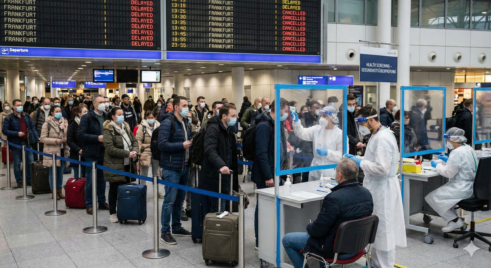

Ginebra, Suiza – La Organización Mundial de la Salud (OMS) ha declarado una "emergencia de salud pública de preocupación internacional" tras la detección de una nueva variante del COVID-19, bautizada como "Kobit-25", que se propaga rápidamente en varios países de Asia y Europa. Expertos advierten que esta cepa podría superar en contagiosidad a las variantes anteriores.
El Origen y la Detección Inicial
La variante Kobit-25 fue identificada por primera vez en un laboratorio de Pekín, China, a finales de noviembre de 2025, en muestras de pacientes con síntomas similares a los de la COVID-19 original, pero con una mayor resistencia a las vacunas existentes.

Según informes preliminares de la OMS, esta mutación parece haber surgido de una recombinación entre el virus SARS-CoV-2 y cepas estacionales de gripe, lo que le confiere una capacidad de transmisión aérea superior al 50% en comparación con Omicron.
Impacto en la Salud y la Economía Mundial
El pánico se ha apoderado de los mercados y los centros de transporte. En las últimas dos semanas, se han reportado más de 50.000 casos confirmados en China, Corea del Sur y Japón.

Europa en Alerta Máxima
Países como Alemania y Francia han registrado brotes importados, con más de 2.000 casos en aeropuertos. La Unión Europea debate la reimposición de pruebas obligatorias para viajeros y posibles cierres de fronteras, lo que podría afectar el turismo navideño y generar pérdidas económicas estimadas en miles de millones de euros.
Asia: Epicentro del Resurgimiento
China ha implementado cuarentenas estrictas en ciudades como Shanghái, recordando las medidas de 2020. Las imágenes que llegan desde la región muestran un retorno a los controles severos.
Perspectivas Futuras
Datos preliminares indican una tasa de mortalidad del 1-2%, similar a la de variantes pasadas, pero con síntomas más persistentes como fatiga crónica. La OMS estima que, sin intervenciones, podría infectar al 30% de la población mundial en los próximos seis meses.
Líderes mundiales han convocado una cumbre virtual urgente. "Esto no es el fin del mundo, pero sí un recordatorio de que el virus no ha desaparecido", afirmó el Dr. Michael Ryan.